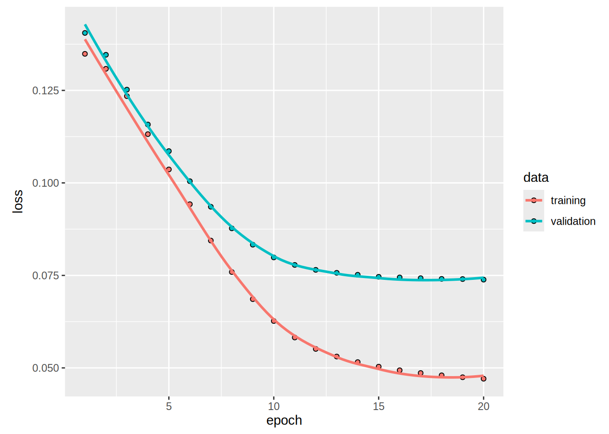
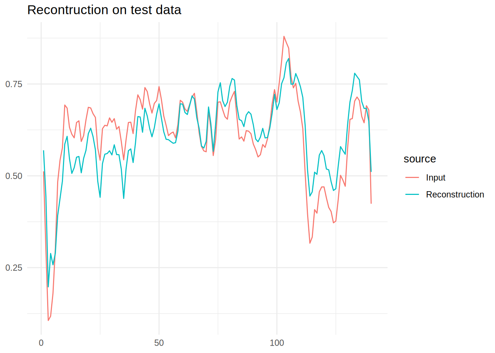

Functional Auto Encoder with R Keras
Objective
This is a somewhat simple post trying to mimic the guides on auto encoders present in Third example: Anomaly detection
Libraries
Do keep in mind that in order to use tensorflow you should run
tensorflow::install_tensorflow()Code
reticulate::use_virtualenv('py399')Download The Dataset
Code
dataframe <- readr::read_csv('http://storage.googleapis.com/download.tensorflow.org/data/ecg.csv',col_names = FALSE)Rows: 4998 Columns: 141
── Column specification ────────────────────────────────────────────────────────
Delimiter: ","
dbl (141): X1, X2, X3, X4, X5, X6, X7, X8, X9, X10, X11, X12, X13, X14, X15,...
ℹ Use `spec()` to retrieve the full column specification for this data.
ℹ Specify the column types or set `show_col_types = FALSE` to quiet this message.Code
dataframe |> head()Code
raw_data <- dataframePreprocessing
Split the data
Code
set.seed(20)
raw_data_split <- initial_split(raw_data,prop = .8)
train_data <- training(raw_data_split)
test_data <- testing(raw_data_split)Normalize the data to [0,1].
Code
target_varible <- raw_data[,ncol(raw_data)] |> names()
recipe_data <- recipe(train_data) |>
update_role(target_varible,new_role = 'outcome') |>
update_role(-target_varible,new_role = 'predictor') |>
step_range(all_predictors(),min = 0,max = 1)Warning: Using an external vector in selections was deprecated in tidyselect 1.1.0.
ℹ Please use `all_of()` or `any_of()` instead.
# Was:
data %>% select(target_varible)
# Now:
data %>% select(all_of(target_varible))
See <https://tidyselect.r-lib.org/reference/faq-external-vector.html>.Separate datasets for future usage
You will train the autoencoder using only the normal rhythms
Which are labeled in this dataset as 1.
Separate the normal rhythms from the abnormal rhythms.
Code
See the data
Normal ECG
Code
# Plot a normal ECG.
normal_train_data |>
head(1) |>
pivot_longer(-target_varible) |>
mutate(name = name |> stringr::str_extract('\\d+') |> as.numeric()) |>
ggplot(aes(x = name,y = value)) +
geom_line() +
theme_minimal() +
labs(title = 'A Normal ECG',x = NULL,y = NULL)Anomalous ECG
Code
anomalous_train_data |>
head(1) |>
pivot_longer(-target_varible) |>
mutate(name = name |> stringr::str_extract('\\d+') |> as.numeric()) |>
ggplot(aes(x = name,y = value)) +
geom_line() +
theme_minimal() +
labs(title = 'A Anomalous ECG',x = NULL,y = NULL)Create Matrixes for tensorflow
Code
normal_train_data_x <- normal_train_data |>
select(-target_varible) |>
as.matrix()
normal_test_data_x <- normal_test_data |>
select(-target_varible) |>
as.matrix()
test_data_x <- baked_test_data |>
select(-target_varible) |>
as.matrix()
anomalous_test_data_x <- anomalous_test_data |>
select(-target_varible) |>
as.matrix()Build The Auto Encoder- Using the functional api
Discover the input and output dimensions
Define the encoder
Code
import sys
sys.executable'/home/carlin/.virtualenvs/py399/bin/python'Code
#|warning: false
encoder_input <- layer_input(shape = c(dim_features), name = "features")
encoder_output <- encoder_input |>
layer_dense(32,activation = "relu") |>
layer_dense(16,activation = "relu") |>
layer_dense(latent_dim,activation = "relu")
encoder <- keras_model(encoder_input, encoder_output, name = "encoder")
encoderModel: "encoder"
┏━━━━━━━━━━━━━━━━━━━━━━━━━━━━━━━━━━━┳━━━━━━━━━━━━━━━━━━━━━━━━━━┳━━━━━━━━━━━━━━━┓
┃ Layer (type) ┃ Output Shape ┃ Param # ┃
┡━━━━━━━━━━━━━━━━━━━━━━━━━━━━━━━━━━━╇━━━━━━━━━━━━━━━━━━━━━━━━━━╇━━━━━━━━━━━━━━━┩
│ features (InputLayer) │ (None, 140) │ 0 │
├───────────────────────────────────┼──────────────────────────┼───────────────┤
│ dense (Dense) │ (None, 32) │ 4,512 │
├───────────────────────────────────┼──────────────────────────┼───────────────┤
│ dense_1 (Dense) │ (None, 16) │ 528 │
├───────────────────────────────────┼──────────────────────────┼───────────────┤
│ dense_2 (Dense) │ (None, 8) │ 136 │
└───────────────────────────────────┴──────────────────────────┴───────────────┘
Total params: 5,176 (20.22 KB)
Trainable params: 5,176 (20.22 KB)
Non-trainable params: 0 (0.00 B)Define Decoder
Code
decoder_input <- layer_input(shape = c(latent_dim), name = "latent_dim")
decoder_output <- decoder_input |>
layer_dense(16,activation = "relu") |>
layer_dense(32,activation = "relu") |>
layer_dense(dim_features,activation = "sigmoid")
decoder <- keras_model(decoder_input, decoder_output, name = "decoder")
decoderModel: "decoder"
┏━━━━━━━━━━━━━━━━━━━━━━━━━━━━━━━━━━━┳━━━━━━━━━━━━━━━━━━━━━━━━━━┳━━━━━━━━━━━━━━━┓
┃ Layer (type) ┃ Output Shape ┃ Param # ┃
┡━━━━━━━━━━━━━━━━━━━━━━━━━━━━━━━━━━━╇━━━━━━━━━━━━━━━━━━━━━━━━━━╇━━━━━━━━━━━━━━━┩
│ latent_dim (InputLayer) │ (None, 8) │ 0 │
├───────────────────────────────────┼──────────────────────────┼───────────────┤
│ dense_3 (Dense) │ (None, 16) │ 144 │
├───────────────────────────────────┼──────────────────────────┼───────────────┤
│ dense_4 (Dense) │ (None, 32) │ 544 │
├───────────────────────────────────┼──────────────────────────┼───────────────┤
│ dense_5 (Dense) │ (None, 140) │ 4,620 │
└───────────────────────────────────┴──────────────────────────┴───────────────┘
Total params: 5,308 (20.73 KB)
Trainable params: 5,308 (20.73 KB)
Non-trainable params: 0 (0.00 B)Define The Auto Encoder
Code
encoded <- encoder(encoder_input)
decoded <- decoder(encoded)
autoencoder <- keras_model(encoder_input, decoded,
name = "autoencoder")
autoencoderModel: "autoencoder"
┏━━━━━━━━━━━━━━━━━━━━━━━━━━━━━━━━━━━┳━━━━━━━━━━━━━━━━━━━━━━━━━━┳━━━━━━━━━━━━━━━┓
┃ Layer (type) ┃ Output Shape ┃ Param # ┃
┡━━━━━━━━━━━━━━━━━━━━━━━━━━━━━━━━━━━╇━━━━━━━━━━━━━━━━━━━━━━━━━━╇━━━━━━━━━━━━━━━┩
│ features (InputLayer) │ (None, 140) │ 0 │
├───────────────────────────────────┼──────────────────────────┼───────────────┤
│ encoder (Functional) │ (None, 8) │ 5,176 │
├───────────────────────────────────┼──────────────────────────┼───────────────┤
│ decoder (Functional) │ (None, 140) │ 5,308 │
└───────────────────────────────────┴──────────────────────────┴───────────────┘
Total params: 10,484 (40.95 KB)
Trainable params: 10,484 (40.95 KB)
Non-trainable params: 0 (0.00 B)Fit the model
Code
Epoch 1/20
5/5 - 1s - 187ms/step - loss: 0.1349 - val_loss: 0.1405
Epoch 2/20
5/5 - 0s - 8ms/step - loss: 0.1308 - val_loss: 0.1346
Epoch 3/20
5/5 - 0s - 8ms/step - loss: 0.1234 - val_loss: 0.1252
Epoch 4/20
5/5 - 0s - 8ms/step - loss: 0.1132 - val_loss: 0.1158
Epoch 5/20
5/5 - 0s - 8ms/step - loss: 0.1036 - val_loss: 0.1086
Epoch 6/20
5/5 - 0s - 8ms/step - loss: 0.0942 - val_loss: 0.1005
Epoch 7/20
5/5 - 0s - 8ms/step - loss: 0.0844 - val_loss: 0.0936
Epoch 8/20
5/5 - 0s - 8ms/step - loss: 0.0759 - val_loss: 0.0877
Epoch 9/20
5/5 - 0s - 8ms/step - loss: 0.0686 - val_loss: 0.0833
Epoch 10/20
5/5 - 0s - 8ms/step - loss: 0.0627 - val_loss: 0.0799
Epoch 11/20
5/5 - 0s - 7ms/step - loss: 0.0582 - val_loss: 0.0778
Epoch 12/20
5/5 - 0s - 8ms/step - loss: 0.0551 - val_loss: 0.0765
Epoch 13/20
5/5 - 0s - 8ms/step - loss: 0.0531 - val_loss: 0.0757
Epoch 14/20
5/5 - 0s - 8ms/step - loss: 0.0516 - val_loss: 0.0752
Epoch 15/20
5/5 - 0s - 8ms/step - loss: 0.0503 - val_loss: 0.0746
Epoch 16/20
5/5 - 0s - 8ms/step - loss: 0.0494 - val_loss: 0.0745
Epoch 17/20
5/5 - 0s - 8ms/step - loss: 0.0486 - val_loss: 0.0742
Epoch 18/20
5/5 - 0s - 8ms/step - loss: 0.0480 - val_loss: 0.0741
Epoch 19/20
5/5 - 0s - 7ms/step - loss: 0.0475 - val_loss: 0.0740
Epoch 20/20
5/5 - 0s - 7ms/step - loss: 0.0471 - val_loss: 0.0739Code
plot(history)
Plot the predictions
Reconstruction on Normal data
Code
encoded_data <- encoder |>
predict(normal_test_data_x)19/19 - 0s - 3ms/stepCode
decoded_data <- decoder |>
predict(encoded_data)19/19 - 0s - 3ms/stepCode
decoded_data_to_plot <- decoded_data |>
head(1) |>
as_tibble() |>
pivot_longer(everything(),values_to = 'Reconstruction') |>
mutate(name = name |> stringr::str_extract('\\d+') |> as.numeric())Warning: The `x` argument of `as_tibble.matrix()` must have unique column names if
`.name_repair` is omitted as of tibble 2.0.0.
ℹ Using compatibility `.name_repair`.Code
normal_test_data_to_plot <- normal_test_data_x |>
head(1) |>
as_tibble() |>
pivot_longer(everything(),values_to = 'Input')|>
mutate(name = name |> stringr::str_extract('\\d+')|> as.numeric())
data_to_plot <- decoded_data_to_plot |>
left_join(normal_test_data_to_plot,by = 'name')
data_to_plot |>
pivot_longer(cols = -name,names_to = 'source') |>
ggplot(aes(x = name,y = value,colour = source,group = source)) +
geom_line() +
theme_minimal() +
labs(title = 'Recontruction on test data',x = NULL,y=NULL)
Reconstruction on Anomalous data
It is clear that the reconstruction can’t quite create the output, this is what we will exploit to define outliers.
Code
encoded_data <- encoder |>
predict(anomalous_test_data_x)14/14 - 0s - 2ms/stepCode
decoded_data <- decoder |>
predict(encoded_data)14/14 - 0s - 1ms/stepCode
decoded_data_to_plot <- decoded_data |>
head(1) |>
as_tibble() |>
pivot_longer(everything(),values_to = 'Reconstruction') |>
mutate(name = name |> stringr::str_extract('\\d+') |> as.numeric())
normal_test_data_to_plot <- anomalous_test_data_x |>
head(1) |>
as_tibble() |>
pivot_longer(everything(),values_to = 'Input')|>
mutate(name = name |> stringr::str_extract('\\d+')|> as.numeric())
data_to_plot <- decoded_data_to_plot |>
left_join(normal_test_data_to_plot,by = 'name')
data_to_plot |>
pivot_longer(cols = -name,names_to = 'source') |>
ggplot(aes(x = name,y = value,colour = source,group = source)) +
geom_line() +
theme_minimal() +
labs(title = 'Recontruction on Anomalous test data',x = NULL,y=NULL)Detect anomalies
Discover the threshold to flag annomalies
73/73 - 0s - 1ms/stepCode
train_data_tibble <- normal_train_data_x |> as_tibble()
train_loss = loss_mean_squared_error(as.matrix(reconstructions), as.matrix(train_data_tibble))
data_loss <- train_loss |> as.numeric() |> as_tibble()
data_loss |>
ggplot(aes(x = value)) +
geom_histogram(bins = 50) +
labs(title = 'Loss Normal Train Data',x = 'Train Loss', y = 'No of examples') +
theme_minimal()Code
threshold <-mean(train_loss) + sd(train_loss)
print(threshold |> as.numeric())[1] 0.01256173There are other strategies you could use to select a threshold value above which test examples should be classified as anomalous, the correct approach will depend on your dataset. You can learn more with the links at the end of this tutorial.
If you examine the reconstruction error for the anomalous examples in the test set, you’ll notice most have greater reconstruction error than the threshold. By varing the threshold, you can adjust the precision and recall of your classifier.
If you need something faster, and usually more practical do check out my package tidy.outliers for easy to use outlier detection methods.
14/14 - 0s - 4ms/stepCode
anomalous_test_data_x_tibble <- anomalous_test_data_x |> as_tibble()
test_loss = loss_mean_squared_error(as.matrix(reconstructions), as.matrix(anomalous_test_data_x_tibble))
data_loss <- test_loss |> as.numeric() |> as_tibble()
data_loss |>
ggplot(aes(x = value)) +
geom_histogram(bins = 50) +
labs(title = 'Loss Anomalous Test Data',x = 'Test Loss', y = 'No of examples') +
theme_minimal()Classify anomalies
Code
predict_outlier <- function(model,data,threshold){
reconstructions <- model |> predict(data)
loss <- loss_mean_squared_error(reconstructions, data)
df_result <- keras::k_less(loss,threshold) |>
as.numeric() |>
as.factor() |>
as_tibble() |>
rename(estimate = value)
return(df_result)
}
preds <- predict_outlier(autoencoder,anomalous_test_data_x,threshold)14/14 - 0s - 2ms/stepRegistered S3 methods overwritten by 'keras':
method from
as.data.frame.keras_training_history keras3
plot.keras_training_history keras3
print.keras_training_history keras3
r_to_py.R6ClassGenerator keras3Code
Code
df_result |>
yardstick::precision(truth = truth,estimate = estimate)Code
df_result |>
yardstick::recall(truth = truth,estimate = estimate)Changelog
2024-02-09 Updated to Keras3.
Next Steps
Check out the Tensorflow Next Steps